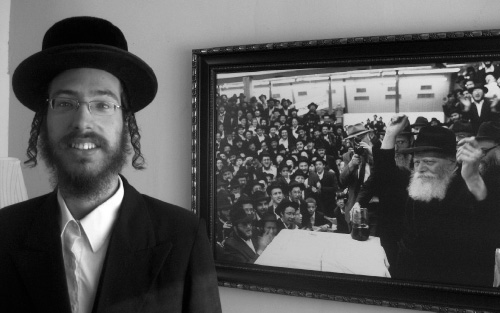

From Vizhnitz to Chabad

When I was asked to write about how I came to Lubavitch, I thought it might upset my parents or relatives who don’t fully understand why I’ve done what I’ve done. But then I thought about the great benefit that could result. Who knows – some young bachurim who are in spiritual turmoil might come across my story and it will enable them to find their way to simcha in the fulfillment of mitzvos and Torah study.
I asked the Rebbe for a bracha and was amazed by the clear answer I opened to in the Igros Kodesh (Volume 12, p. 259):
… I was pleased that you were invited to lecture before different groups. Surely you will try diplomatically to be invited on regular occasions … and only that the matter actually happens, and this is similar to the aphorism of Rabbi Hillel of Paritch that everything he did was in order that he better apprehend a word of Chassidus.
WHAT BOTHERED ME IN VIZHNITZ
I grew up in the Vizhnitz community in Rechovos, one of the oldest and strongest communities of this Chassidic group. My family has been Vizhnitz for three generations and is one of the more well-known Chassidic families because of its size. My grandfather has twelve children and each of them has over twelve children, bli ayin ha’ra. My grandfather has over 150 grandchildren and nearly 100 great-grandchildren, kein yirbu.
The main messages I was raised with were Shmiras HaLashon (watch what you say) and Shmiras HaEinayim (watch what you see). It was all without much in the way of explanation; we did what we did because Hashem thus commanded. A mitzva creates a good angel and a sin creates a bad angel. How does that work? What is an angel? How does its rank compare to that of a Jew? They didn’t quite say, and someone with the desire to know more would find himself in a quandary.
Much emphasis is put on dress and external appearance. One can say this is the most sacred value not only in Vizhnitz, but throughout the Chassidic world. In Chabad, if a bachur isn’t doing well spiritually, you will immediately see this in how he dresses, but in other groups a bachur can sink to the spiritual depths and still shukl while davening with a face displaying d’veikus. In Chabad the emphasis is on p’nimius. A Lubavitcher bachur who is not doing well spiritually will have a hard time playing the game of someone whose thoughts are in the Gemara or a maamer Chassidus. However, he can pick himself up quicker because the truth is clear to him. He knows good and well that he deteriorated because of his impulsive desires and not necessarily because of questions of faith.
This is the crux of the issue. The basis of the chinuch I was raised with was “see and do;” we don’t ask questions about emuna. We don’t explore or investigate. This may have been a fine approach a few generations ago, but our generation wants to understand and relate to things.
I began a process of searching and investigating. At a certain point, I lacked clarity as far the deeper significance and tangible veracity of the fundamentals of Torah. I went on a search in order to find answers to my questions. I thought the problem might be with me, and that if I would learn more and more s’farim, then matters would become clear. By nature I love to read and do research. So I read and learned hundreds of s’farim of other branches of Chassidus.
I considered Chabad the antithesis of what I was looking for. In general, someone outside of Chabad doesn’t realize that each Nasi of Chabad has dozens if not hundreds of deep Chassidic works, works that give the sense that it wasn’t a mere human being who wrote or taught their content. My perception of Chabad Chassidim was as a group of delusional people who help Jews in Tel Aviv with t’fillin. How could they allow their bachurim to walk in the streets there?! And who cares about the secular anyway?
When I learned in Yeshivas Vizhnitz in B’nei Brak, I felt even more of a need to search. I read general Chassidic works like Arvei Nachal, Likkutei HaBaal Shem Tov, and other s’farim of various Admurim. None of them gave me clear answers that I found satisfying. I saw the set of s’farim called Bilvavi Mishkan Evneh. The author is not a Lubavitcher, but he is one of the biggest disseminators of Chassidus that there are today. In his s’farim, he explains many Chassidic concepts and he uses Chabad sources. By reading his s’farim, I began to see that Chabad has depth, and it’s not just about going on mivtza t’fillin and spreading the Besuras HaGeula.
I decided to check out Chabad despite its being strange and different. I found out about the Chassidus library in B’nei Brak where one can borrow s’farim. I met the mashpia R’ Zalman Gopin there. On my first visit, I listened to him just a little because I found him too philosophical. I borrowed some s’farim and returned to yeshiva. I came across issues of Beis Moshiach and eagerly read the articles by the mashpia R’ Chaim Levi Yitzchok Ginsberg and was impressed. They touched me and I felt that there was truth there.
I remember that merely the thought that perhaps I had found my derech caused me to experience a sort of inner light.
THE ALTER REBBE AS THE DIRECT CONTINUATION OF THE BAAL SHEM TOV
I came across a maamer of the Rebbe Rashab, “T’fillin D’Morei Alma,” which he said at the bar mitzva of the Rebbe Rayatz. I related to the content; it wasn’t similar to anything that I had read previously. It sent me back to R’ Gopin’s shiurim. For two years I learned with him every week and this developed my understanding. I connected to Lubavitch on two levels. Firstly, I was drawn to the Toras HaChassidus. I felt that there was an entire, organized teaching here which was founded by the Alter Rebbe. Second, I very much connected to the image of the Rebbe, to his leadership, to his genuine Jewish pride.
When I “got it,” I was euphoric. The moment I understood the approach and logic of Chabad, along with the sense that this was true, that the Alter Rebbe was actually the successor to the Maggid in promoting the teachings of the Baal Shem Tov, then the issue of “Chai V’kayam” and Moshiach didn’t bother me. On the contrary, it was thanks to that that I started believing that there really is a Creator, that there is G-dliness in everything in creation, and so what is the problem with Moshiach?
I realized that if Chabad is the natural continuation and the Rebbe is the seventh generation, then Gimmel Tammuz could not stop all this. Woe to us if we think there is a break. Moreover, the fact is that we see that this works. Chabad today is reaching places that it did not reach before. People are thirsting for Chassidus.
In Chabad I understood for the first time what ruchnius (spirituality) is, which is spoken about so much. Ruchnius is not a passing cloud; true ruchnius affects and penetrates the world and is expressed in the Rebbe’s conduct. I felt that I had begun to believe but with an inner desire, without being forced. I love Torah and love the Nosein HaTorah (Giver of the Torah). A window was opened for me, to a magical world. It is hard to express the feeling I had. It is like an ordinary guy who discovers a diamond mine worth billions of dollars.
It wasn’t just I who experienced the truth of Chabad. I had a friend who went through a great spiritual yerida (descent). I dragged him with me to the library where he saw a video of the Rebbe singing “Tzama Lecha Nafshi” and he began to sob. This was a bachur who cynically mocked everything sacred, but when he saw the Rebbe, he saw the truth and it moved him.
SIGN FROM HEAVEN
One day, I returned from a Chassidus shiur all excited. I asked my roommate in yeshiva, “How do you picture Hashem?”
He responded immediately, “I visualize pyramids with tens of thousands of angels with Hashem above them all, and they all praise Him.”
I told him what the Rambam writes, the way the Alter Rebbe explains it, that Hashem is the True Existence and that there is G-dliness within everything. He thought I had lost my mind and ran to the mashgiach to ask him about what I said. The mashgiach dismissed him, saying that this was heresy. Later on I found out that the mashgiach himself learned Chassidus, but his answer was meant to calm down the bachur who could not deal with what I had said. Throughout his life, he was taught that Hashem is a sort of “image,” and now someone came along who negated this approach.
I will admit that back then, when I was first starting out in Chabad, what the mashgiach said caused me to experience a crisis. I wanted to scream “What are you talking about?” Until then, the entire topic of emuna wasn’t clear to me; my outer appearance was that of a religious Jew but I had been like an empty container, minus the inner faith. The teachings of Chabad Chassidus restored me, making me a more connected Jew, so how could he say I was a heretic? Today I realize that there are people whose faith needs to be through an “image,” as a law, and not through understanding.
My parents knew about what I was going through. My father later told me that he took a sample of my handwriting to a famous graphologist in B’nei Brak, who said, “Although you are Vizhnitzer Chassidim, your son is suited to be a Chabadnik; it suits him to serve Hashem through his mind.” Perhaps this is what caused my father to more readily swallow the “bitter pill” when I told him that I was becoming a Lubavitcher.
All along my new path, I needed approval and encouragement so that I would know I was making the right move. I remember that one day I was in a s’farim store and I saw a book that explains concepts in emuna, written by a Lubavitcher. I wanted the book but did not have the money. I made a deal with Hashem (today, I wouldn’t dream of it; it’s out of the question). The deal was that I wanted a sign from Above that I was on the right path and the sign would be if this book came to me.
The next day, I went to my parents by bus where I met a librarian who was holding this book. We got acquainted and I asked him if I could borrow it. He readily agreed and said he just had to read it first himself. The next day he came especially to my parents’ house to give me the book.
During my ten month engagement, I learned Hemshech 5666 and this helped draw me in even more.
MOSHIACH DIDN’T SCARE ME OFF
I began looking into the belief that Chassidim have in the Rebbe as “Chai V’kayam” and Melech HaMoshiach. At first, it seemed ridiculous. However, I felt that now I would investigate it, starting with a “clean slate.” I quickly learned that it is strongly grounded in the sources. The Rebbe himself laid out the blueprint and there couldn’t be a mistake. He was a successor from the Baal Shem Tov, and if he was mistaken, G-d forbid, then the entire approach was a mistake because Chassidus is all about leading to Moshiach.
The topic of Moshiach turned me from an admirer of Chabad to a Chassid. Many religious Jews will never understand the idea of “Chai V’kayam” if they don’t examine it objectively. Ultimately, everyone will need to learn Chassidus. We are already seeing a tremendous interest in Chabad Chassidus. It is clear to me that only by learning Chassidus in a way of intellectual understanding can we fulfill Torah and mitzvos from a place of truth. Without the Alter Rebbe, I don’t know whether Jews today would sense G-dliness. It was for a reason that he was an “original soul.” His teachings are a new Torah, a thousand times deeper than anything else I learned in the other writings of Chassidus. You see this in Tanya and Likkutei Torah even without reading about or knowing about the greatness of the Alter Rebbe.
All of Judaism owes a great deal to the Alter Rebbe, whether we realize it or not. Most of the general works of Chassidus derive their ideas and inspiration from Tanya, even without quoting it. The Alter Rebbe taught us to look from an innermost place and not to focus on the outer covering. According to the Baal HaTanya, doing mitzvos is not in order to receive a reward but to connect with Hashem. There is a reason why it says that we will walk towards the Geula with the Tanya.
Today we feel that the world is ready for Geula. There is an enormous “Yisbareru V’Yislabnu” (truth coming to light). People are looking for truth. Chassidus today is accessible to all groups; it has penetrated through all the obstructions. It can be found today in psychology and science, in p’shat, remez, drush and sod. All segments of the population can connect to the ideas hidden within it.
It is hard in this generation to be a G-d fearing Jew without learning P’nimius HaTorah. It is only with the strength of the Yesh HaAmiti (True Existence) that we can be saved from the Yesh HaNivra (Created Existence). In order to be saved from heresy, we need to learn Chassidus. This is the shlichus of every Chassid, to publicize Chassidic works, maamarim, etc. In my experience, the best way to affect the religious crowd is through shiurim and disseminating Sifrei Chassidus. The religious population is no less thirsty than other groups. Spreading the wellsprings is not only for those who are bareheaded.
I definitely feel that I owe my spiritual life to the Alter Rebbe.
Beis Moshiach (staff). "From Vizhnitz to Chabad." Beis Moshiach, no. 867 (January 31, 2013).